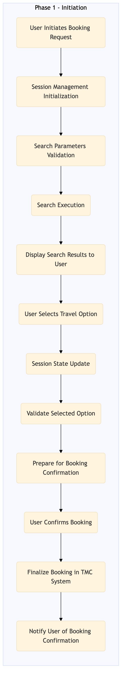

This process document outlines the Booking Initiation and Session Management for OTA Online Booking and Search, covering both Expedia Group (OTA) and Amex GBT / Concur (TMC) systems.
| Trigger | A user initiates a booking request through an OTA platform or TMC system. |
| Outcome | The booking session is successfully initiated, and the user can proceed with searching for and selecting travel options. |
| Systems | Expedia Open World Partner Central Amadeus NDC Sabre GDS Travelport EVC One Key TravelAds AWS SageMaker Snowflake Kafka Salesforce Tableau Concur T2 Concur Expense Amex GBT Neo/Complete Amadeus GDS S/4HANA International SOS Cvent Amex Corporate Card VCN Analytics Cloud Workday |

Click to enlarge
| Step | Name & Pain Point | Role | System | Input | Output | KPI | Flags |
|---|---|---|---|---|---|---|---|
| 1.1 | User Initiates Booking Request Handling high volumes of concurrent booking requests | Traveler | Expedia Open World, Partner Central, Amadeus NDC, Sabre GDS, Travelport, EVC, One Key, TravelAds | Booking request with travel details (e.g., dates, destinations) | Session ID and confirmation of booking initiation | 95% successful booking initiations within 2 seconds | ⚠ Exception |
| 1.2 | Session Management Initialization Ensuring data consistency across distributed systems | System Administrator | AWS SageMaker, Snowflake, Kafka | Session ID from step 1.1 | Session management record in the database | 98% session management records created within 5 seconds | ⚠ Exception |
| 1.3 | Search Parameters Validation Handling invalid or incomplete travel details | Backend Developer | Expedia Open World, Partner Central, Amadeus NDC, Sabre GDS, Travelport, EVC, One Key, TravelAds | Travel details from step 1.1 | Validated search parameters | 90% valid search parameters within 3 seconds | ◆ Decision |
| 1.4 | Search Execution Integrating with multiple GDS systems for real-time data | Backend Developer | Expedia Open World, Partner Central, Amadeus NDC, Sabre GDS, Travelport, EVC, One Key, TravelAds | Validated search parameters from step 1.3 | Search results | 85% successful search executions within 10 seconds | ⚠ Exception |
| 1.5 | Display Search Results to User Optimizing user experience for large datasets | Frontend Developer | Expedia Open World, Partner Central, Amadeus NDC, Sabre GDS, Travelport, EVC, One Key, TravelAds | Search results from step 1.4 | User interface displaying search results | 95% successful display of search results within 2 seconds | ⚠ Exception |
| 1.6 | User Selects Travel Option Handling multiple simultaneous selections | Traveler | Expedia Open World, Partner Central, Amadeus NDC, Sabre GDS, Travelport, EVC, One Key, TravelAds | Selected travel option from the user interface | Confirmed selection and updated session state | 90% successful selections within 5 seconds | ◆ Decision |
| 1.7 | Session State Update Ensuring atomicity and consistency of session states | System Administrator | AWS SageMaker, Snowflake, Kafka | Selected travel option from step 1.6 | Updated session management record in the database | 98% successful state updates within 3 seconds | ⚠ Exception |
| 1.8 | Validate Selected Option Handling complex validation rules | Backend Developer | Expedia Open World, Partner Central, Amadeus NDC, Sabre GDS, Travelport, EVC, One Key, TravelAds | Selected travel option from step 1.6 | Validation status (valid/invalid) | 95% successful validations within 2 seconds | ◆ Decision |
| 1.9 | Prepare for Booking Confirmation Integrating with payment gateways and TMC systems | Backend Developer | Expedia Open World, Partner Central, Amadeus NDC, Sabre GDS, Travelport, EVC, One Key, TravelAds | Validation status from step 1.8 | Prepared booking data for confirmation | 90% successful preparation within 5 seconds | ⚠ Exception |
| 1.10 | User Confirms Booking Handling payment failures and retries | Traveler | Expedia Open World, Partner Central, Amadeus NDC, Sabre GDS, Travelport, EVC, One Key, TravelAds | Confirmation from the user interface | Confirmed booking details | 95% successful confirmations within 2 seconds | ◆ Decision |
| 1.11 | Finalize Booking in TMC System Ensuring data synchronization between OTA and TMC systems | Backend Developer | Concur T2, Concur Expense, Amex GBT Neo/Complete, Amadeus GDS, S/4HANA, International SOS, Cvent, Amex Corporate Card, VCN, Analytics Cloud, Workday | Confirmed booking details from step 1.10 | Finalized booking record in TMC system | 98% successful finalizations within 5 seconds | ⚠ Exception |
| 1.12 | Notify User of Booking Confirmation Handling different notification channels (email, SMS, app push) | Frontend Developer | Expedia Open World, Partner Central, Amadeus NDC, Sabre GDS, Travelport, EVC, One Key, TravelAds | Finalized booking record from step 1.11 | Notification to the user interface | 95% successful notifications within 2 seconds | ⚠ Exception |